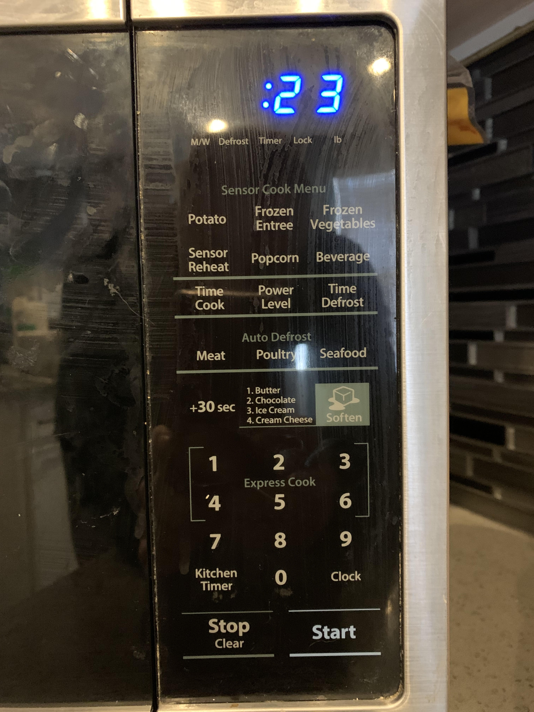

Project 1: Microwave Interface
Example Microwave Interface

Microwave Control Panel

Issues With Current Design
- There are 5 labels underneath the timer display that are not self-explanitory as to what they represent
- The Sensor Cook Menu is confusing as to how much time or the condition the food needs to be in before the setting to be effective. Does the microwave *sense* the food and type? Or is it just a pre-set?
- The listed items next the Soften picture are confusing. Is that how many times the user should press the +30 sec button to the right of it?
- The Express Cook Label appears to only refer to the 2 button. The braces around the 1,4 and 3,6 buttons are also confusing.
Common Uses of a Microwave
- Cooking Food
- Reheating Food
- Boiling Water
- Defrosting Frozen Food
The inteface makes these common uses cases realtively easy. Most require time-based heating which can be accomplished with simple time settings. The interface falls a little short in having proper timing assocatiated with common food types like potatoes, boiling water.
Rare Uses of Microwaves
- Heating beauty products
- De-crystalization science experiments
The inteface makes these common uses cases realtively easy. Most require time-based heating which can be accomplished with simple time settings. The interface falls a little short in having proper timing assocatiated with common food types like potatoes, boiling water.
Common Mistakes Made
- Forgetting that buttons 1-6 are Express Cooking Presets. You must click Time Cook first for setting specific time
- Assuming that the Popcorn preset will cook for the exact correct amount of time. If the bag is smaller you will likely scorch the popcorn